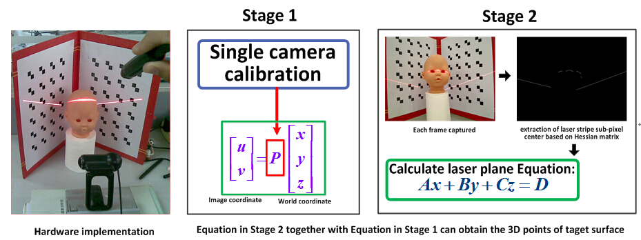

Low-cost 3D laser scanner for 3D reconstruction
Designed a low-cost 3D laser scanner for 3D reconstruction. Intelligent Control and System Lab at HIT, Postgraduate researcher, Research advisor: Huijun Gao. (See video demo in the attachment)
..
Flow Chart

Highlights
- The hardware components include a line laser transmitter, a web camera and three calibration boards.
- Two key technical problems have been solved, which are camera calibration and laser stripe center extraction. Zhang’s Calibration method is applied to calibrate the camera in which tangential distortion and radial distortion of lens are also considered. Hessian matrix was employed to extract the sub-pixel position of the laser stripe center.
- The final experiments show high precision in 3D reconstruction results and we could assume that if both camera and calibration boards are fixed, no camera calibration is needed each time and users could just use the line transmitter to scan the object up and down. Therefore this 3D laser scanner will open a huge market for its low cost, convenience and high precision.
Video Demo
..
© 2015 Curriculum Vitae All Rights Reseverd | Design by Wanxin Jin & Doctor Yang